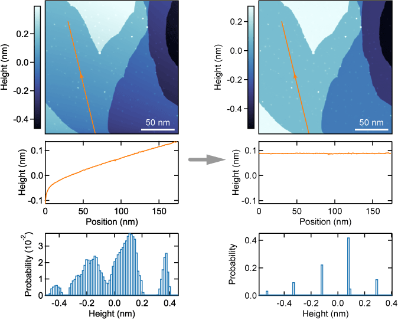

Sati¶
Statistical Analysis of Topographic Images
This package enables you to simultaneously
subtract background (a polynomial surface, logarithmic decays, exponential decays)
label terraces
estimate terrace heights
estimate the unit height of steps
even in the presence of steps.
Requirements¶
Sati requires the following dependencies:
python 3.8 or later
matplotlib
numexpr
numpy
scipy
Reference¶
If you find this package is useful for your analysis, please refer arXiv:2012.01570.